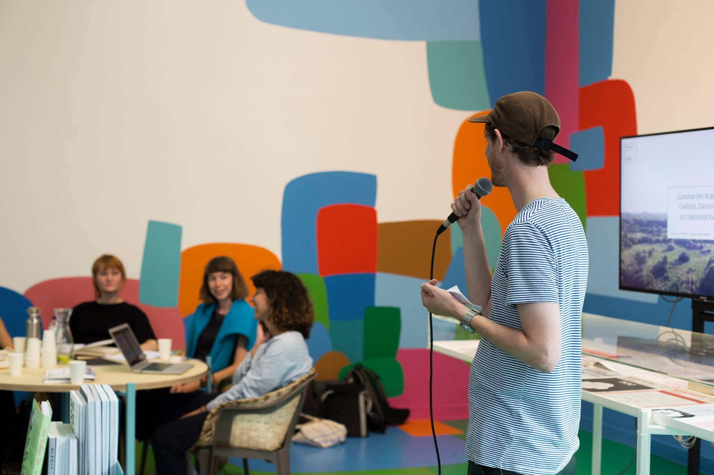
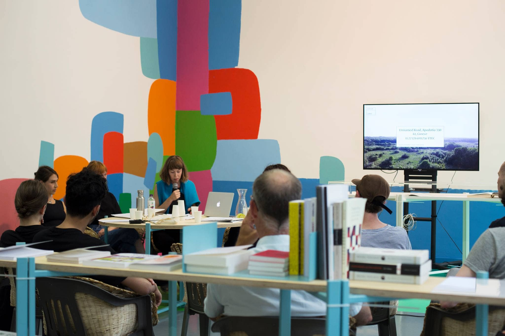
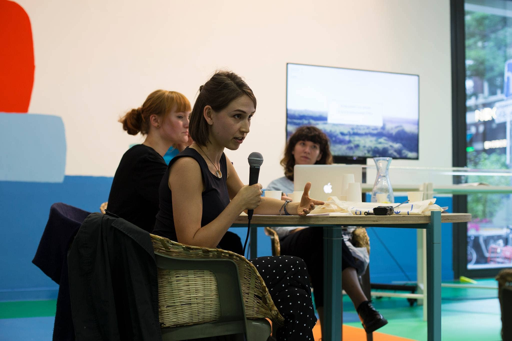
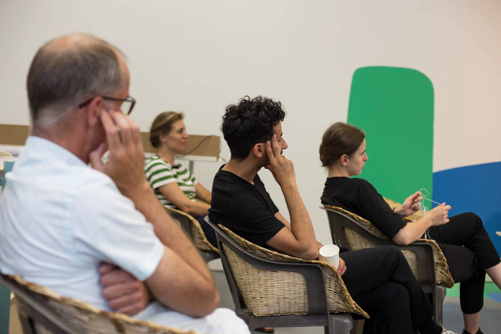
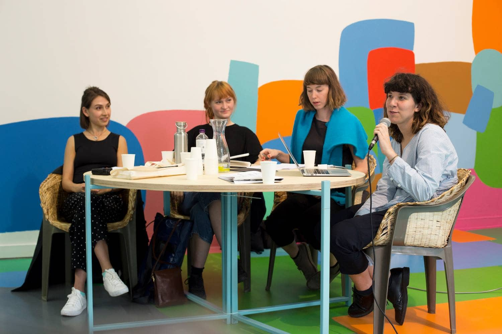

On Thursday 5 July 2018 between 23:00 and 00:00 CEST we set off to transverse the atmospheric levels for the radio prologue of Eline Benjaminsen & Sophie Dyer — RADIO, TECHNO, FOSSIL at Het Schimmengebied hosted by Duistere Bardo on Radio Tonka 92.0 Den Haag FM.
Amongst other, the hour-long radio program featured pieces by Dr. Matt Rogalsky & Dr. Laura Cameron, Emptyset and Daniele Guerrini & Matthias Girardi and welcomed lecturer in GeoHumanities at Royal Holloway, University, Sasha Engelmann as a program contributor.
You can listen to a recording of the program below, as well as find the diagram we used as the map for our journey.


RADIO, TECHNO, FOSSIL tells the story of a radio-image as it traverses the bounds of the Earth’s surfaces, atmospheres and techno-geographies.
Het Schimmengebied is a bi-weekly radio show hosted by electronic artist Duistere Bardo, bringing nocturnal sounds, chaotic noises, and poetic reflections from forgotten realms of existence — now and then enriched with performances, interviews and talks with strange visitors or guests from the outside realm.
If you would like to have further information about the participants, please check our facebook event
On Friday 6 July 2018, between 20:00 and 21:00 CEST, as part of Kunstavond XL. Experimental publication platform oneacre.online found a physical manifestation at Untitled, Witte de With’s ground floor gallery, presenting RADIO, TECHNO, FOSSIL by Eline Benjaminsen and Sophie Dyer. With a guest contribution by Sasha Engelmann, lecturer in GeoHumanities at Royal Holloway University of London, who will respond to the work of Benjaminsen and Dyer.
    